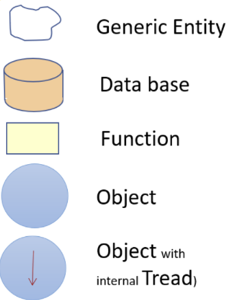
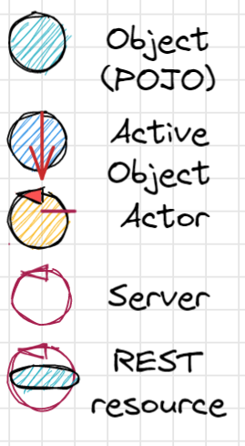
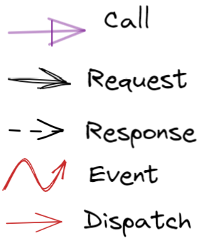

Struttura
Dal punto di vista strutturale, le funzioni (o le procedure) e gli oggetti costituiscono componenti fondamentali, largamente in uso nei programmi non distribuiti, anche di piccole dimensioni.
Nel contesto di un sistema software distribuito, componenti-base come le funzioni si trovano all’interno di altri componenti, che possiamo qui indicare genericamente come macro-componenti.
Interazione
Per denotare in forma grafica questi diversi tipi di messaggi, faremo riferimento a simboli come quelli della figura che segue:
|
Loris Giannatempo 
|
Davide Guidetti 
|
|---|